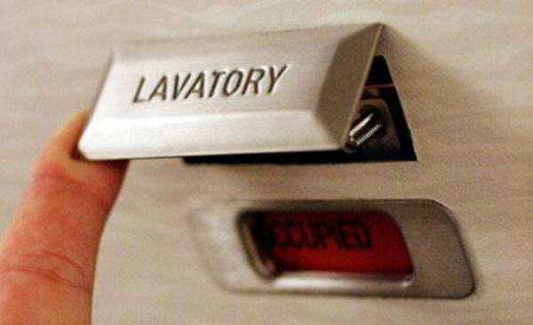

Flying on an airplane can be stressful for most people. You’re putting your life in the hands of strangers, all the while sitting in a metal tube in the sky, praying it doesn’t just stop floating up there. These 18 secrets about flying aren’t necessarily going to make you feel better.
There are some dirty facts that the airlines don’t want you to know. Like…
1.) Lavatory stalls can actually be unlocked from the outside.
